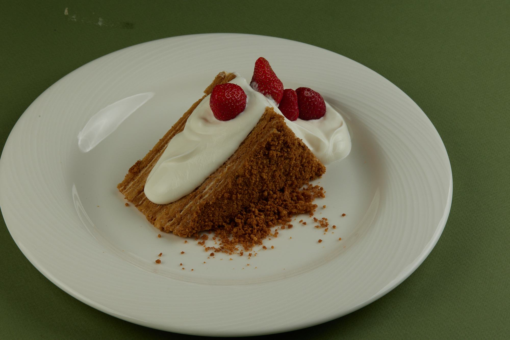

Медовик

Набор ингредиентов
Для крема:
- Сметана 20% 1100 гр;
- Сливки 33% 400 гр;
- Сыр творожный 400 гр;
- Мёд 50 гр;
- Сахар 150 гр;
- Ванильный сахар 50 гр.
Для коржей:
- Мёд 50 гр;
- Сахар 350 гр;
- Сода 15 гр;
- Уксус столовый 9% 10 гр;
- Яйцо куриное 3 шт;
- Мука пшеничная 720 гр;
- Масло сливочное 200 гр.
Технология приготовления коржей
Смешиваем яйцо, сахар, добавляем мёд, соду (гашеную уксусом), сливочное масло.
Растапливаем всё в сотейнике до однородной консистенции на небольшом нагреве, постоянно помешивая.
Даём немного остыть, перекладываем в дежу и замешиваем тесто. даем отдохнуть в холодильнике.
Делим коржи на равыное количество и раскатываем между двумя селиконовыми ковриками. Выпекать в разогретом пароконвектомате при температуре t-180С 4 - 5 минут до золотистого цвета.
Технолоия приготовления крема
Подготовленные ингредиенты, соединяем в деже и начинаем взбивать на средней скорости.
Накрываем в контакт плёнкой и убираем в холодильник для стабилизации.
Технология сборки торта
Подготовленные коржи смазываем кремом по 150 гр, чередуя корж и крем. Последний слой крема засыпать крошкой из коржа.
Инструменты
- Планетарный миксер;
- Селиконовая лопатка;
- Сотейник;
- Селиконовый коврик;
- Противни;
- Пароконвектомат или печь;
- Весы.